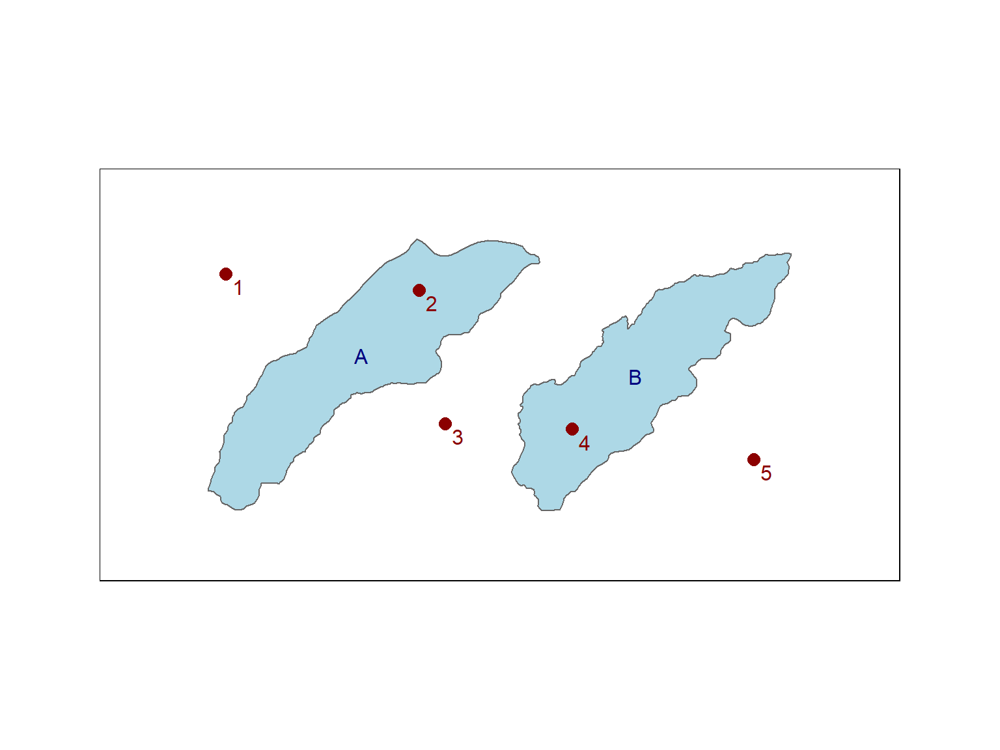
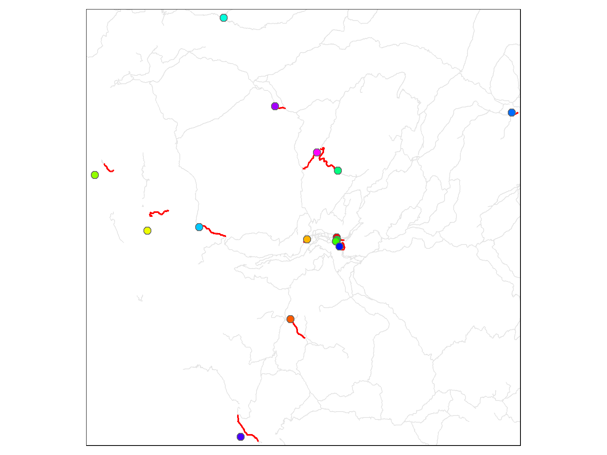
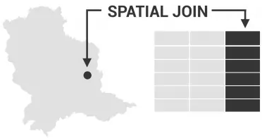

R for GIS
BayGeo, Spring
2024
Spatial Queries & Joins

Spatial Queries & Joins

Spatial query = selecting features based on their location or spatial relationship (relative to another feature)
Spatial Querying is also known as Spatial Subsetting
Spatial relationship functions in sf:
| st_intersects() | overlaps or touches |
| st_disjoint() | opposite of intersect |
| st_touches() | touches only |
| st_crosses() | cross (but doesn’t touch) |
| st_within() | within |
| st_contains() | contains |
| st_contains_properly() | interiors intersect but not edges or exterior |
| st_overlaps() | overlaps |
| st_equals() | equals |
| st_covers() | covers |
| st_covered_by() | completely covered |
| st_equals_exact() | equals within a tolerance |
| st_is_within_distance() | within a distance |
These functions are also known as spatial predicates.
These are logical functions - they return TRUE/FALSE values (and/or or row numbers).
Spatial proximity functions require that layers be in the same CRS.
Let’s look at an example:
where
x (target) and
y (source) are both sf
objects
sparse = TRUEx, and
sparse = FALSEx, andy
Consider an example where x contains 5 points and
y contains 2 polygons:

When sparse = TRUE, you get a list of
indices:
## Sparse geometry binary predicate list of length 5, where the predicate was `intersects'
## 1: (empty)
## 2: 1
## 3: (empty)
## 4: 2
## 5: (empty)When sparse = FALSE, you get a 2 x 5
matrix of logical values:
## [,1] [,2]
## [1,] FALSE FALSE
## [2,] TRUE FALSE
## [3,] FALSE FALSE
## [4,] FALSE TRUE
## [5,] FALSE FALSEWhen you get back the results of a spatial relationship test, you can
use them to subset features with dplyr functions:
filter()slice()
You can also subset spatially use the familiar square bracket notation, putting a sf object as the expression for the rows.
The following are equivalent:
By default, when the rows argument is a sf object the result will be
an intersection. To use a different spatial test, add
the optional op argument:
sf::st_distance() computes distances between
pairs of features
If you pass it one sf object, it’ll return a distance matrix of features in that layer.
If you pass it two sf objects, it’ll return a pairwise distance matrix of features in both layer.
epsg_utm11n_nad83 <- 26911
yose_celltwrs_utm <- st_read("./data/yose_communications.gdb", "Cell_Towers", quiet = TRUE) |>
st_transform(epsg_utm11n_nad83) |>
select(tower_id = Id, tower_name = Name, x_utm = X_UTM, y_utm = Y_UTM)
st_distance(yose_celltwrs_utm) |> round()## Units: [m]
## 1 2 3 4 5
## 1 0 25216 26523 45311 43318
## 2 25216 0 1892 22540 21140
## 3 26523 1892 0 20686 21215
## 4 45311 22540 20686 0 27738
## 5 43318 21140 21215 27738 0distance is always computed in map units (so use projected data!)
st_distance() returns distances using the
units package
## Import the campgrounds
yose_campgrnds_utm <- st_read(dsn="./data", layer="yose_poi", quiet = TRUE) |>
filter(POITYPE == 'Campground') |>
select(POINAME) |>
st_transform(epsg_utm11n_nad83)
st_distance(yose_campgrnds_utm, yose_celltwrs_utm) |> round()## Units: [m]
## [,1] [,2] [,3] [,4] [,5]
## [1,] 46219 25885 26226 33538 5904
## [2,] 42064 19211 19163 25492 2385
## [3,] 36624 13645 13738 23774 7499
## [4,] 26168 15613 17308 36062 19627
## [5,] 22083 9689 11543 31666 21313
## [6,] 20396 7834 9724 30322 22987
## [7,] 541 24683 25995 44831 42783
## [8,] 33353 9178 7376 13417 20586
## [9,] 46362 23071 21252 1825 26769
## [10,] 26671 1890 2647 22221 19250
## [11,] 23859 1411 2822 23428 22413
## [12,] 23970 1403 2639 23199 22497
## [13,] 24176 1257 2426 22996 22384
## [14,] 24211 1734 2314 22612 22844
## [15,] 33272 26623 28245 45779 23754Each row represents a campground.
Each column represents a cell tower.
To identify nearby neighbors, you can use:
Some of these return indices. Some of them return indices or logicals, some of them return geometries. See the help pages for details.
When computing feature-to-feature distances or identifying nearest neighbors, the layers should be in the same CRS.
Here we’ll find the closest trail segment for each campground using
st_nn() from the nngeo package.
## Import the trails
yose_trails_utm <- st_read("./data/yose_trails.gdb", layer="Trails") |>
st_transform(epsg_utm11n_nad83)
## Load the nngeo package
library(nngeo)
## Run st_nn() passing sparse = TRUE so we get back a list of indices
closest_trail_lst <- st_nn(yose_campgrnds_utm, yose_trails_utm, sparse = TRUE, progress = FALSE)
glimpse(closest_trail_lst)
## Convert the list to a vector
closest_trail_idx <- unlist(closest_trail_lst)
closest_trail_idx## Reading layer `Trails' from data source
## `D:\Workshops\R-Spatial\rspatial_mod\outputs\rspatial_bgs24\exercises\data\yose_trails.gdb' using driver `OpenFileGDB'
## Simple feature collection with 1074 features and 13 fields
## Geometry type: MULTILINESTRING
## Dimension: XY
## Bounding box: xmin: 245134 ymin: 4153668 xmax: 323239.7 ymax: 4250703
## Projected CRS: NAD83 / UTM zone 11N
## List of 15
## $ : int 610
## $ : int 117
## $ : int 275
## $ : int 467
## $ : int 504
## $ : int 961
## $ : int 237
## $ : int 432
## $ : int 343
## $ : int 563
## $ : int 541
## $ : int 603
## $ : int 566
## $ : int 927
## $ : int 72
## [1] 610 117 275 467 504 961 237 432 343 563 541 603 566 927 72Plot the results:
## Plot results
rainbow_cols <- rainbow(nrow(yose_campgrnds_utm), end=5/6)
tm_shape(yose_trails_utm, bbox=yose_campgrnds_utm) +
tm_lines(col="gray90") +
tm_shape(yose_trails_utm |> slice(closest_trail_idx)) +
tm_lines(col="red", lwd=2) +
tm_shape(yose_campgrnds_utm) +
tm_symbols(col="POINAME", palette = rainbow_cols, size=0.5) +
tm_layout(legend.show = FALSE)
For large datasets or if you need more options, see also FNN (Fast Nearest Neighbor) package.
A spatial join is a lot like dplyr::left_join()
⇒ you’re copying attribute columns from one table to another.
But instead of joining two rows based on the values in a common column, you join them based on their spatial relationship.

In R you can do a spatial join with:
st_join(x, y, join)
where x and
y are sf objects
join is the name of a spatial
relationship function:
st_intersectsst_nearest_featurest_is_within_distancest_within?st_join for others
ESRI calls spatial joins geo-enrichment
Use a spatial join to save the id and coordinates of the closest cell tower to the campgrounds attribute table.
yose_camp_plus_cell_utm <- yose_campgrnds_utm |>
st_join(yose_celltwrs_utm, join = st_nearest_feature)
yose_camp_plus_cell_utm## Simple feature collection with 15 features and 5 fields
## Geometry type: POINT
## Dimension: XY
## Bounding box: xmin: 247625.8 ymin: 4158885 xmax: 292815.1 ymax: 4204389
## Projected CRS: NAD83 / UTM zone 11N
## First 10 features:
## POINAME tower_id tower_name x_utm y_utm geometry
## 1 Hodgdon Meadow Campground 30 Crane Flat 251532.4 4182870 POINT (247625.8 4187296)
## 2 Crane Flat Campground 30 Crane Flat 251532.4 4182870 POINT (253315.9 4181287)
## 3 Tamarack Flat Campground 30 Crane Flat 251532.4 4182870 POINT (258936.4 4181679)
## 4 White Wolf Campground 6 Yosemite Valley 272489.8 4180099 POINT (267142.6 4194768)
## 5 Yosemite Creek Campground 6 Yosemite Valley 272489.8 4180099 POINT (271702.9 4189756)
## 6 Porcupine Flat Campground 6 Yosemite Valley 272489.8 4180099 POINT (273987.5 4187789)
## 7 Tuolumne Meadows Campground 3 Tuolumne Meadows (CDWR) 293307.2 4194328 POINT (292815.1 4194103)
## 8 Bridalveil Creek Campground 21 Sentinel Dome 272232.6 4178225 POINT (268815.7 4171688)
## 9 Wawona Campground 27 Wawona 265240.0 4158756 POINT (263419.9 4158885)
## 10 Camp 4 Campground 6 Yosemite Valley 272489.8 4180099 POINT (270612 4180317)
To extract values from a raster at feature locations, use
raster::extract().
In this session we saw how to:
st_intersects() and
st_is_within_distance() that test pairs of
features for spatial relationshipsst_nn()Additional Resources
Geocomputation with R Ch4: Spatial Data Operations. Robin Lovelace, Jakub Nowosad, Jannes Muenchow